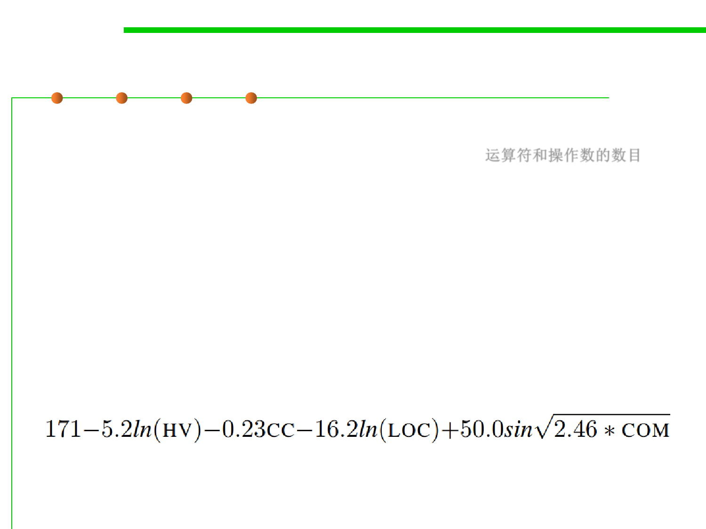

6.1 Metrics and Construction Principles for Maintainability
Some common-used maintainability metrics
▪ Halstead Volume: a composite metric based on the number of
(distinct) operators and operands in source code. 运算符和操作数的数目
▪ Maintainability Index (MI) - Calculates an index value between 0
and 100 that represents the relative ease of maintaining the code. A
high value means better maintainability. It is calculated based on:
– Halstead Volume (HV)
– Cyclomatic Complexity (CC)
– The average number of lines of code per module (LOC)
– The percentage of comment lines per module (COM).